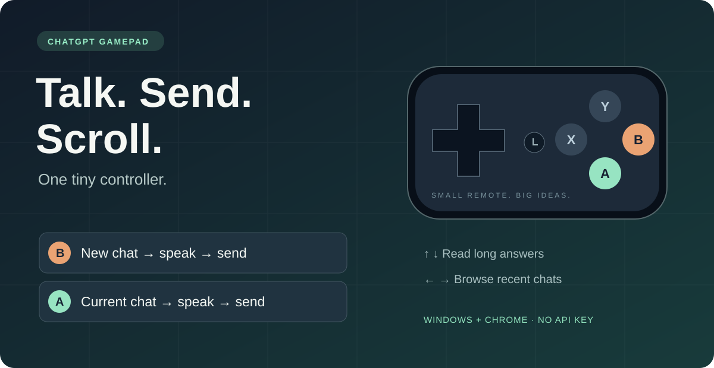

Give ChatGPT a controller.
A little Bluetooth gamepad becomes a remote for thinking out loud, sending prompts, and reading long answers. Your existing ChatGPT account. No API key.
Try the button logic.
Tap B for a new conversation. Tap it again to send. A keeps you in the current one. X starts or stops native read aloud.
How could I use a tiny gamepad for ChatGPT?
Speak a new idea with B. Continue it with A. Read the response with the D-pad.
The real extension confirms dictation, waits for transcription, and sends it through your ChatGPT page.
Up and down scroll the conversation directly, without moving your mouse pointer.
Left and right browse ordinary conversations in Recent. Known pinned and project conversations are excluded.
Keep the pointer where it is.
Direct webpage scrolling with smooth hold-to-repeat. Support for reverse-layout chat containers. No mouse or keyboard injection for scrolling.
Set it up once.
Calibrate A and B, then let the Windows listener run quietly in the background and start at login.
From small remote to first prompt.
Windows 10/11 · Chrome 116+ · Python 3.12+ · ChatGPT dictation · Microphone
- Download the ZIP and extract it into a permanent folder.
- Run
setup.ps1to install dependencies and create your local pairing token. - Load the
extensionfolder in Chrome's developer-mode extensions page. - Open the control window once to calibrate your gamepad.
- Open ChatGPT, allow the microphone when requested, and press B.
Full installation and background startup instructions →
Verified with SHANWAN Q36XDV in X mode. Other controllers are unverified. A/B use speech-to-text dictation, not a live voice call. X uses ChatGPT’s native read aloud. ChatGPT's normal account limits apply.